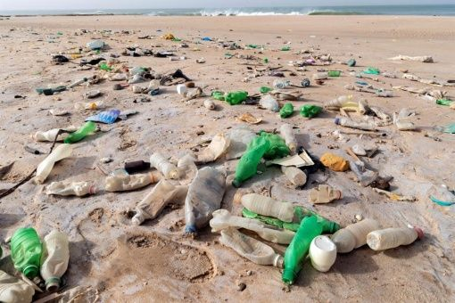
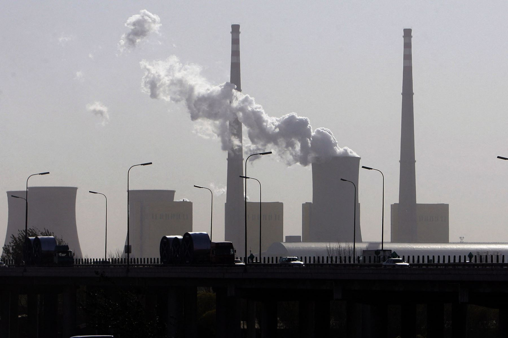

Contaminación de chocolates Kinder: Suman 151 casos de salmonela en Europa
La Organización Mundial de la Salud (OMS) confirmó este miércoles 151 casos de salmonelosis vinculados al consumo de chocolate procedente de Bélgica, tras un análisis genético realizado en Reino Unido. El análisis detectó una vinculación genética entre la bacteria que causa esta enfermedad, la Salmonella, y una serie de chocolates procedentes de Bélgica, todos productos del tipo Kinder, que fueron distribuidos en 113 países, explica la Organización en un comunicado. De acuerdo con la Agencia de Seguridad Sanitaria de Reino Unido, el brote de “Salmonella Typhimurium”, cuyo primer caso fue detectado en diciembre de 2021, muestra resistencia contra seis tipos de antibióticos. De momento, los más afectados han sido niños menores de diez años y mujeres, con un total de 134, lo que se explica por tratarse de productos dirigidos a la población infantil.
Gobierno peruano apoya a la ONU en combate a la contaminación

El presidente de Perú, Pedro Castillo, expresó este martes el respaldo de su Gobierno a la iniciativa de la Organización de Naciones Unidas (ONU) consistente en crear el primer tratado internacional para frenar la contaminación por plásticos en el mundo. Desde la sede del Ministerio de Relaciones Exteriores y durante la ceremonia de presentación de cartas credenciales de los embajadores en Perú de Croacia, Noruega, Angola, Nigeria, Ghana, Singapur, Namibia, Sudáfrica y Túnez, Castillo destacó la participación y protagonismo de su país en tal decisión, proceso intergubernamental al cual se adscribieron 175 naciones. "Hemos sido actores centrales en la reciente e histórica decisión de iniciar la negociación de un nuevo tratado internacional, jurídicamente vinculante, para prevenir y reducir la contaminación por plásticos, un proceso intergubernamental que el Perú espera liderar", sostuvo el jefe de Estado.
ONU: El mundo debe frenar emisiones de CO2 en 2025 para que el futuro sea "viable"

Las emisiones de CO2 tienen que ser frenadas de aquí a 2025 para que el futuro de la Humanidad sea “viable”, de acuerdo a un informe del grupo de expertos de la ONU sobre cambio climático (IPCC) divulgado este lunes.Para que el calentamiento del planeta no genere cambios irreversibles, solo quedan tres años para que esas emisiones se estabilicen, y luego empiecen a caer, según ese Panel Intergubernamental sobre el Cambio Climático (IPCC). Hay que abandonar el carbón, y reducir en al menos un 60% el uso del petróleo, y del 70% en el caso del gas, de aquí a 2050, según el informe de expertos.Si no se consiguen desarrollar técnicas de captura de carbono, el carbón debería ser abandonado totalmente, el uso del petróleo debería ser reducido en al menos 60% y el gas en al menos 70% de aquí a 2050, respecto a los niveles de 2019. “Casi toda la producción mundial de electricidad debería provenir de fuentes con cero o baja emisión de carbono”, estima el IPCC.Solamente el 10% de la electricidad producida en el mundo en 2021 proviene de la energía solar o eólica, calculan expertos del sector independientes.Los hogares que representan el 10% con más ingresos en el mundo acumulan el 45% de las emisiones de gases de efecto invernadero, señala el IPCC.
Tabla 1: Paises mas contaminantes
Cantidad en millones de toneladas de CO2
Pais
Cantidad
Bandera
China
9899,3
Estados Unidos
4457,2
India
2302,3
Rusia
1482,2
Japón
1027
Irán
678,2
Alemania
604,9
Corea del Sur
577,8
Arabia Saudita
570,8
Canadá
517,7
Tabla 2: Paises que mas contaminan los oceanos
Cantidad en millones de toneladas metricas de desechos en oceanos